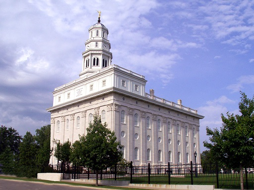

St. George, Utah Temple
- Address: 250 E 400 S, St. George, UT 84770
- Phone Number: 435-673-3533
- Services: Clothing rental and cafeteria available; distribution center nearby.
- Ordinance Schedule: Every 40 minutes from 7:20 am to 8:00 pm. Please call to schedule living ordinances.
- Upcoming Closure: Monday, 27 May 2019
- Today's Weather: °F
- History: The St. George Temple was the third temple constructed by the Church, and the first temple
constructed in Utah, soon after the saints migrated from Nauvoo, Illinois. Not surprisingly, it looks very similar to the Nauvoo temple. It was dedicated in 1877.

Nauvoo, Illinois Temple
- Address: 50 N Wells St, Nauvoo, IL 62354
- Phone Number: 217-453-6252
- Services: Clothing rental available.
- Ordinance Schedule: Every hour from 8:00 am to 6:00 pm. Please call to schedule living ordinances.
- Upcoming Closure: Monday, 29 April-Sunday, 12 May 2019
- Today's Weather: °F
- History: The Nauvoo Temple was the second temple constructed by the Church, being dedicated in 1846.
When members were uprooted from Nauvoo soon after that, the Church sold the temple building, only for it to be destroyed by a fire and tornado. The temple was rebuilt on the original plot of land in 2002.
Manhattan New York Temple
- Address: 125 Columbus Ave, Fourth Floor, New York, New York 10023-6514
- Phone Number: 917-441-8220
- Services: Clothing rental available.
- Ordinance Schedule: Every hour from 8:00 am to 6:00 pm. Please call to schedule living ordinances.
- Upcoming Closure: Thursday, 4 July 2019
- Today's Weather: °F
- History: The Manhattan New York Temple is the 119th operating temple of the Church, and it is one of the few that was converted from an existing building. It was dedicated in 2004.

San Diego, California Temple
- Address: 7474 Charmant Dr, San Diego, California 92122-5000
- Phone Number: 858-622-0991
- Services: Clothing rental and cafeteria available; distribution center nearby.
- Ordinance Schedule: Every hour from 8:00 am to 8:00 pm. Please call to schedule living ordinances.
- Upcoming Closure: Thursday, 4 July 2019
- Today's Weather: °F
- History: The San Diego Temple was dedicated in 1993 and is the 45th operating temple of the Church. Although there is no visitor center, the Mormon Battilion Historic Site is nearby.